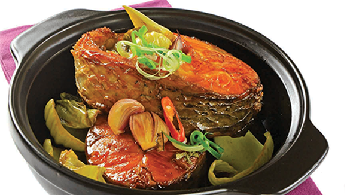

Cá trắm kho dưa cải

- Khẩu phần 4
- Chuẩn bị 20 phút
- Thực hiện 25 phút
Nguyên liệu
- 1 con cá trắm (600g)
- 2 cây cải chua
- 3 củ hành tím
- 10g hành lá
- 3 trái ớt hiểm
- 2 gói Gia vị Hoàn Chỉnh Cá Kho
- 2 thìa súp dầu ăn
- 1/2 thìa súp nước màu
- 1 thìa cà phê tiêu
Hướng dẫn thực hiện
- Cá trắm làm sạch, cắt khứa lớn. Cải chua xả nước cho sạch, cắt khúc vừa
ăn. Hành tím bóc vỏ thái đôi. Hành lá bào sợi. Ớt rửa sạch
- Cho cá, cải chua, hành tím vào tô lớn, cho nước màu và 2 gói Gia
vị hoàn chỉnh Cá Kho vào, đảo nhẹ cho cá thấm, để 15 phút
- Làm nóng dầu ăn, cho cá và cải chua đã ướp vào chiên sơ, để lửa nhỏ. Khi
cá săn lại, cho nước vào xăm xắp mặt cá, thêm ớt vào, kho khoảng 20 phút,
khi thấy nước sệt lại là được, tắt bếp, rắc hành lá và tiêu lên.